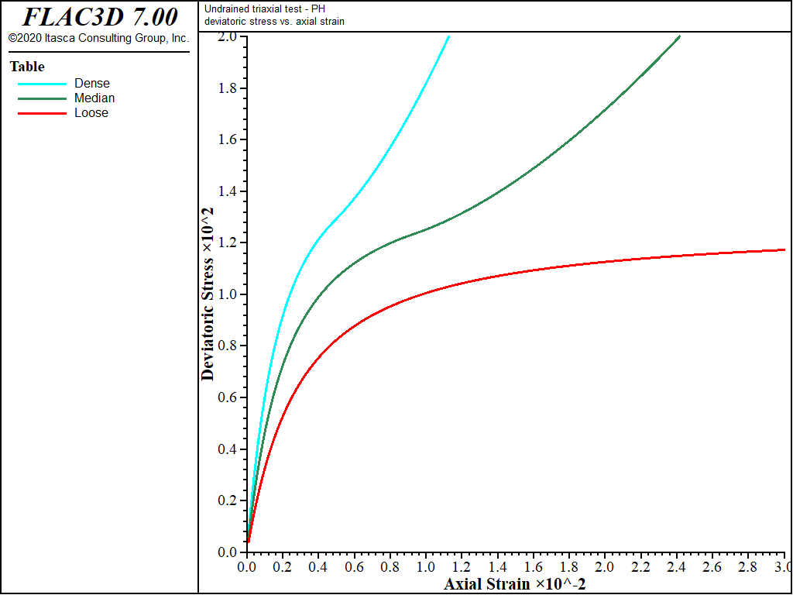

FLAC3D Theory and Background • Constitutive Models
采用塑性硬化模型的不排水三轴压缩试验
注意
要在 FLAC3D 中查看此项目，请使用菜单命令 。 选择“ConstitutiveModels/ UndrainedTriaxialPlasticHardening”并选择“UndrainedTriaxialPlasticHardening.f3dprj”以加载。 该项目的主数据文件见本示例末尾（main data file）。
使用 塑性硬化（PH）模型（Plastic-Hardening (PH) model）对密砂、中密砂和松砂进行的不排水三轴试验重复进行，但这次是在不排水 条件下。本示例不考虑帽盖屈服，因此采用默认值 \(OCR\) = 100。初始应力状态为各向同性，平均压力等于 100 kPa。 本示例通过设置零体积应变来实现不排水条件；因此无需配置 流体逻辑。使用 PH 模型对密砂、中密砂和松砂进行三轴试验 模拟。模型特性列于 表 1（Table 1）。
| 参数 | 密砂 | 中密砂 | 松砂 |
|---|---|---|---|
| \(E^{ref}_{50}\) (kPa) | 4.0e4 | 3.0e4 | 2.0e4 |
| \(\phi\) | 40 | 35 | 30 |
| \(\psi\) | 10 | 5 | 0 |
| \(K_{nc}\) | 0.36 | 0.43 | 0.50 |
| \(c\) (kPa) | 0 | ||
| \(p_{ref}\) (kPa) | 100 | ||
| \(m\) | 0.5 | ||
| \(\sigma^{ini}_{1 \sim 3}\) (kPa) | -100 | ||
| \(OCR\) | 100 | ||
| \(e_{max}\) | 1.02 |
不排水模拟的偏应力结果绘于 图 1（Figure 1）。


图 1：密砂、中密砂和松砂的 \(\mid \sigma_1 - \sigma_3 \mid\)（kPa）与轴向应变的关系——不排水三轴试验。
数据文件
UndrainedTriaxialPlasticHardening.dat
; 不排水三轴试验
model large-strain off
model title "Undrained triaxial test - PH"
;
zone create brick size 1 1 1
zone cmodel assign plastic-hardening
;
zone initialize stress xx -100. yy -100. zz -100.
;
zone property density 1000 pressure-ref=100. exponent=0.5 void-maximum 1.02
zone property stiffness-50-ref=[E50ref] stiffness-ur-ref=[3*E50ref] ...
friction=[fric] dilation=[dila] ...
coefficient-normally-consolidation=[knc]
zone property stress-1-effective=-100. stress-2-effective=-100. ...
stress-3-effective=-100.
;
zone gridpoint fix velocity
zone gridpoint fix velocity-z -1e-6 range position-z 1
zone gridpoint fix velocity-x 5e-7 range position-x 1
zone gridpoint fix velocity-y 5e-7 range position-y 1
;
[global z = zone.head]
fish define ph_q
return zone.stress.xx(z) - zone.stress.zz(z)
end
;
zone history displacement-z position (1,1,1)
fish history ph_q
history interval 100
;
model step 30000
;
history export '2' vs '1' reverse table 'deviatoricStress'
table 'deviatoricStress' ...
export [string.build('deviatoricStress%1', _IChoice)] truncate
⇐ Drained Triaxial Compression Test with Plastic-Hardening Model | Oedometer Test with Plastic-Hardening Model ⇒
| 这些内容对您有帮助吗？… | FLAC3D © 2019, Itasca | 原文更新于 2020 年 10 月 8 日 |